Leonardo di ser Piero da Vinci (April 15, 1452 - May 2 1519), an Italian Polymath of the High Renaissance.
He was an active painter, theorist, sculptor, and architect and innovated ways of creating striking compositions.
Famous Artworks: Mona Lisa (c. 1503-1516), The Last Supper (1498), Lady with an Ermine (1489-91)
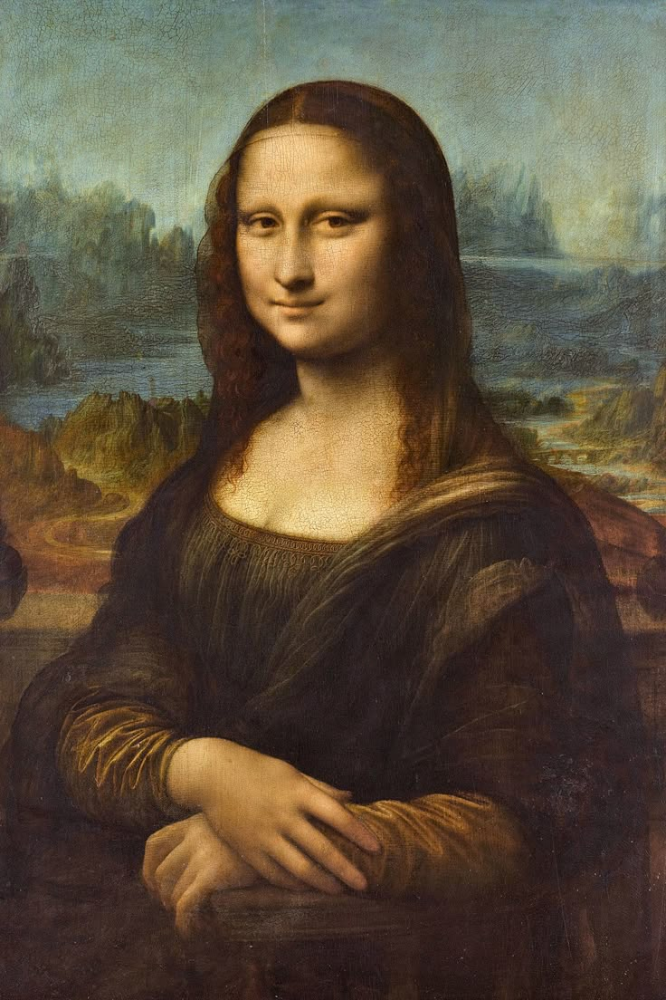
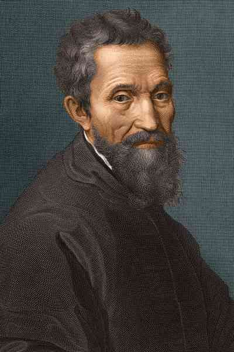
Michaelangelo
Michelangelo di Lodovico Buonarroti Simoni (March 6, 1475 - February 1564), an Italian sculptor, painter, architect and poet of the High Renaissance.
He was named as an achetypal Renaissance man for his creativeness and mastery in a range of artistic arenas.
Famous Artworks: David (1501-4), Pieta (1498-99), The creation of Adam (c. 1511)
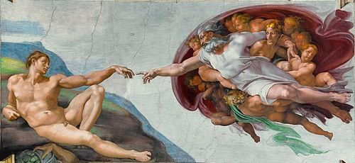
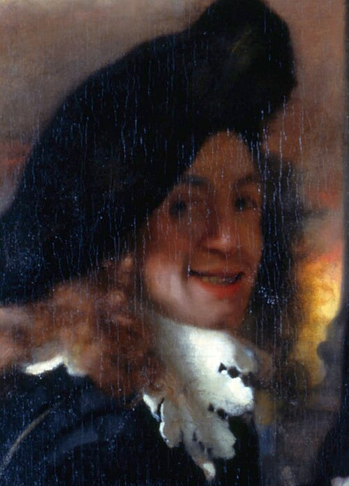
Vermeer
Johannes Vermeer (October 31, 1632 - December 15, 1675), also known as ‘Jan Vermeer’, a Dutch painter who specializes in domestic interior scenes of middle class life.
His arts were forgotten for two centuries until it was eventually discovered again in the 19th century.
Famous Artworks: Girl with a Pearl Earring (1665)
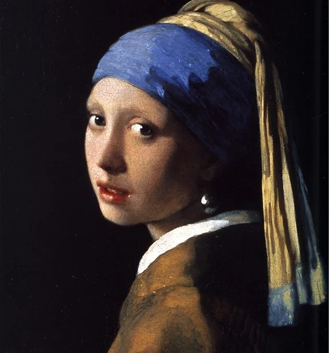
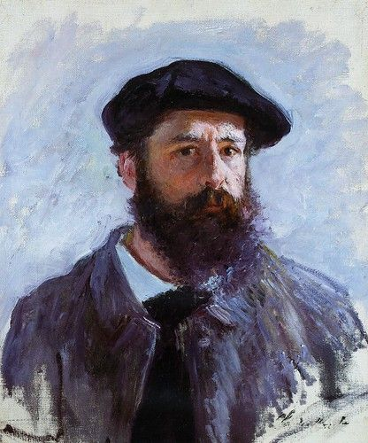
Claude Monet
Claude Monet (November 14, 1840 – December 5, 1926), was a French painter and one of the founders of Impressionism.
He became known for capturing light, color, and changing moments in nature through loose and visible brushstrokes.
Famous Artwork: Impression, Sunrise (1872), Water Lilies, Haystacks (1890-91), Rouen Cathedral Series (1892-94)
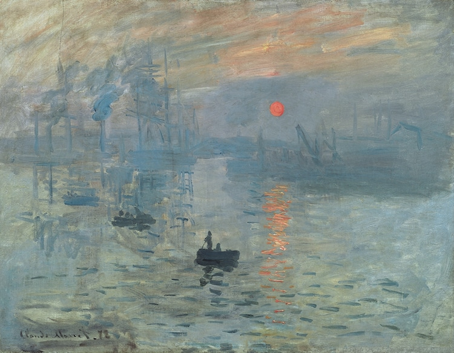
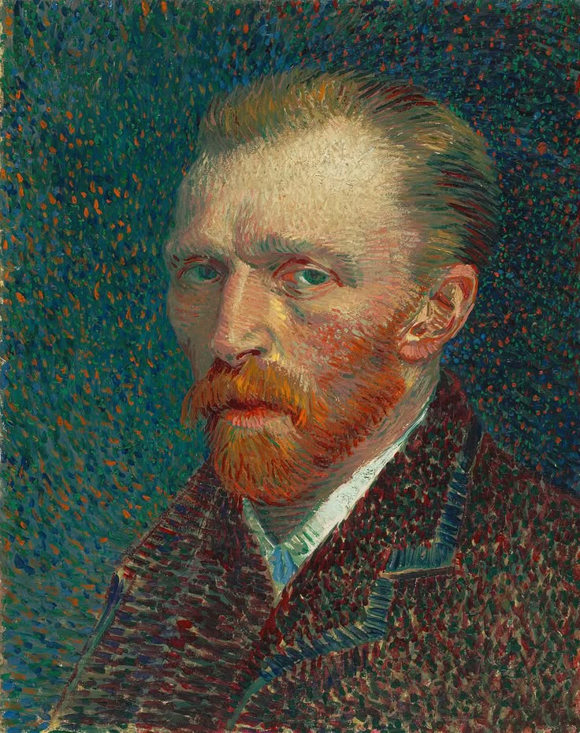
Vincent van Gogh
Vincent van Gogh (March 30, 1853 – July 29, 1890), was a Dutch Post-Impressionist painter known for his expressive use of color.
His bold brushstrokes and emotional style greatly influenced the development of modern art.
Famous Artwork: The Starry Night (1889), Sunflowers (1888–1889), The Bedroom (1888)
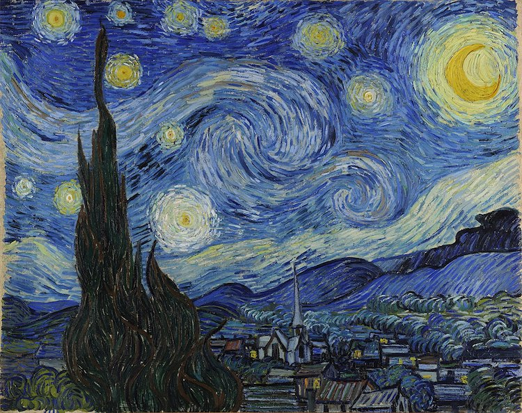
Pablo Picasso
Pablo Picasso (October 25, 1881 – April 8, 1973), was a Spanish artist and one of the most influential artists of the 20th century.
He helped pioneer Cubism and experimented with many different styles throughout his artistic career.
Famous Artwork: Guernica (1937), Les Demoiselles d'Avignon (1907), The Weeping Woman (1937)
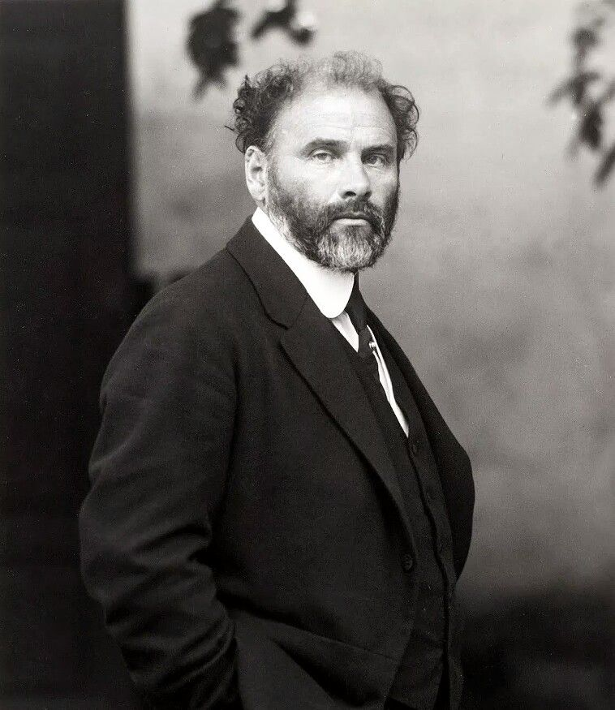
Gustav Klimt
Gustav Klimt (July 14, 1862 – February 6, 1918), was an Austrian painter known for Symbolism and the Vienna Secession movement.
His works are recognized for their decorative patterns, rich colors, and use of gold.
Famous Artwork: The Kiss (1907–1908), Portrait of Adele Bloch-Bauer I (1907), Judith I (1901)
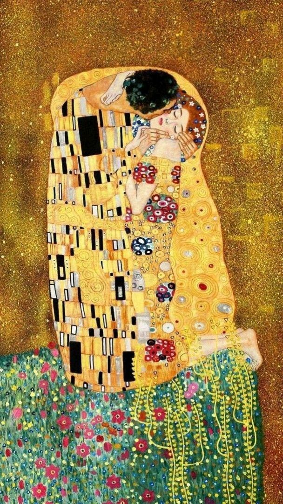
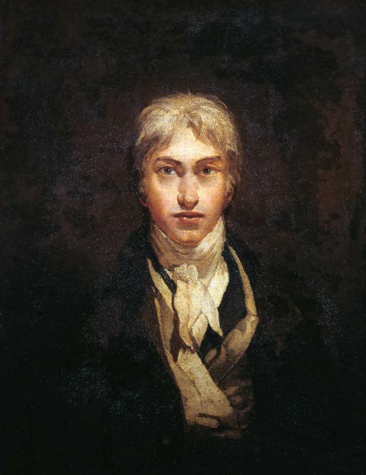
J.M.W. Turner
J. M. W. Turner (April 23, 1775 – December 19, 1851), was an English Romantic painter known for his landscapes and seascapes.
His dramatic use of light, atmosphere, and color made him one of the most important landscape painters in history.
Famous Artwork: The Fighting Temeraire (1839), Rain, Steam and Speed (1844), The Slave Ship (1840)
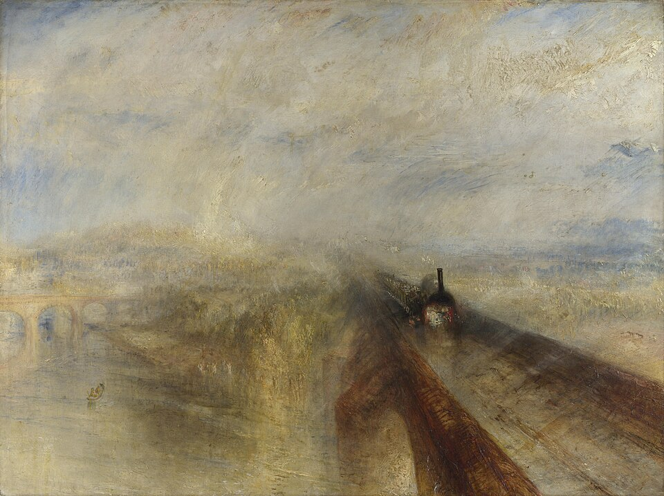
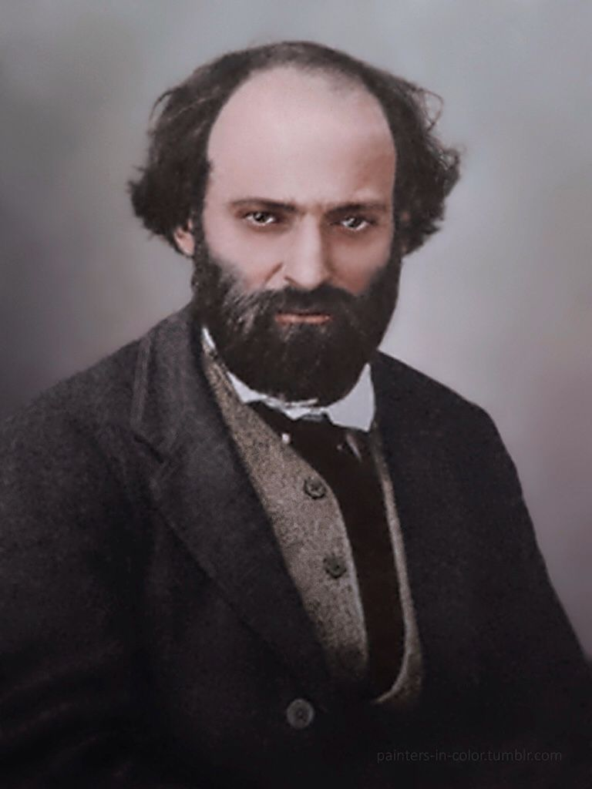
Paul Cezanne
Paul Cézanne (January 19, 1839 – October 22, 1906), was a French Post-Impressionist painter.
His unique approach to form and structure influenced the development of modern art and later movements such as Cubism.
Famous Artworks: The Card Players (1890–1895), The Basket of Apples (c. 1893), and Mont Sainte-Victoire (series)
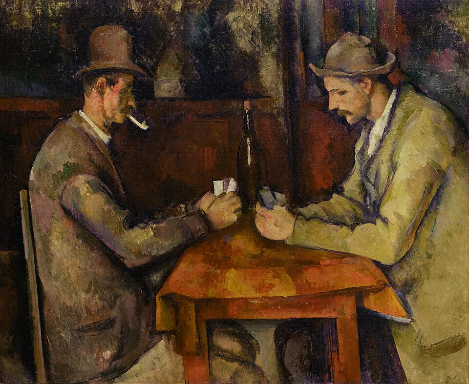
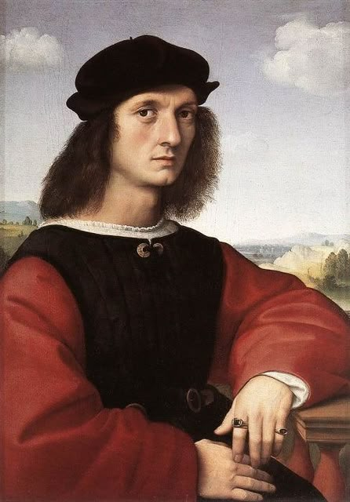
Raphael
Raphael (April 6, 1483 – April 6, 1520), was an Italian painter and architect of the High Renaissance.
He was admired for his balanced compositions and harmonious depictions of human figures.
Famous Artworks: The School of Athens (1509–1511), Sistine Madonna (1512), and The Transfiguration (1516–1520)
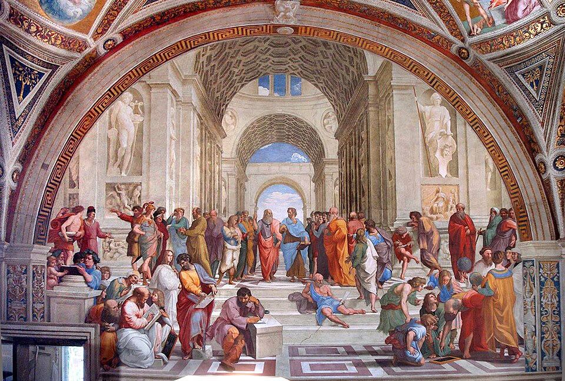
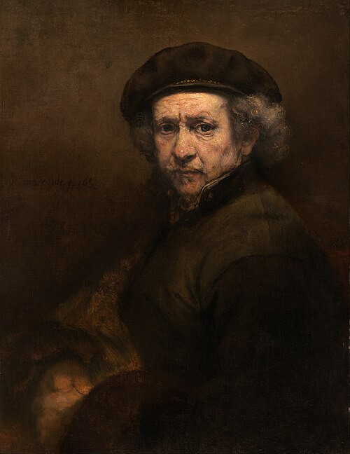
Rembrandt
Rembrandt (July 15, 1606 – October 4, 1669), was a Dutch painter and one of the greatest artists of the Dutch Golden Age.
He became famous for his mastery of light and shadow and his deeply expressive portraits.
Famous Artworks: The Night Watch (1642), The Anatomy Lesson of Dr. Nicolaes Tulp (1632), and The Return of the Prodigal Son (c. 1669)
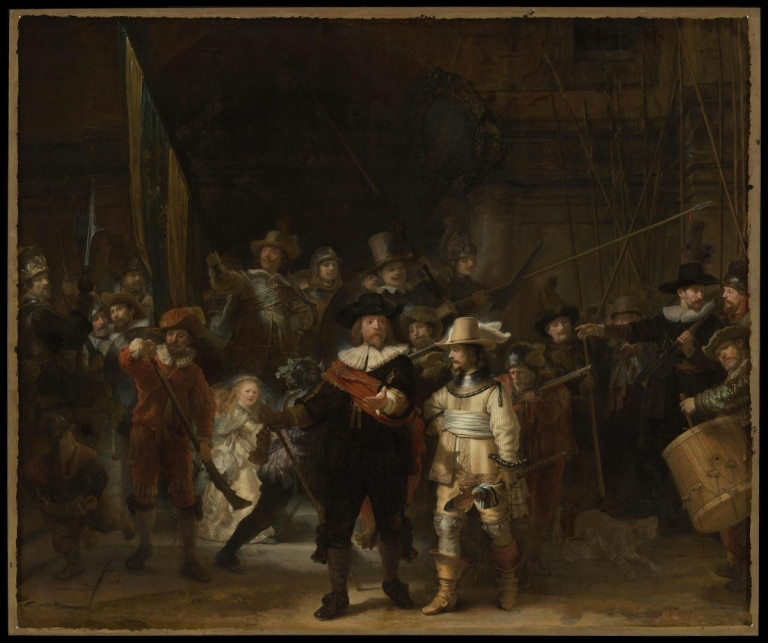
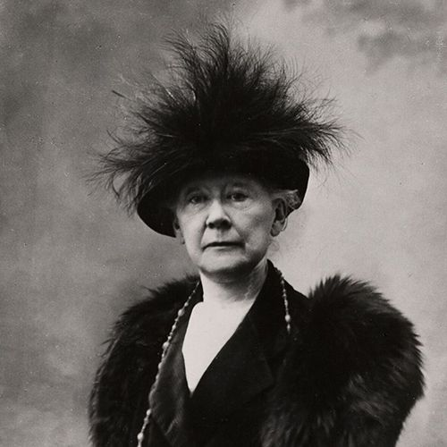
Mary Cassatt
Mary Cassatt (May 22, 1844 – June 14, 1926), was an American painter and printmaker associated with Impressionism.
She was especially known for her paintings depicting women, children, and everyday family life.
Famous Artworks: The Child's Bath (1893), Little Girl in a Blue Armchair (1878), and The Boating Party (1893–1894)
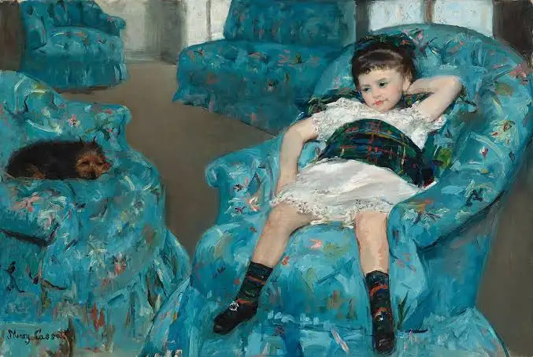
Jackson Pollock
Jackson Pollock (January 28, 1912 – August 11, 1956), was an American painter and a major figure in Abstract Expressionism.
He became famous for his innovative drip painting technique and energetic abstract compositions.
Famous Artworks: No. 5, 1948 (1948), Blue Poles (1952), and Mural (1943)
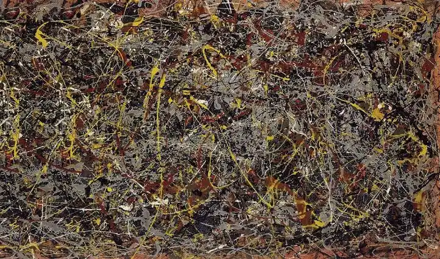
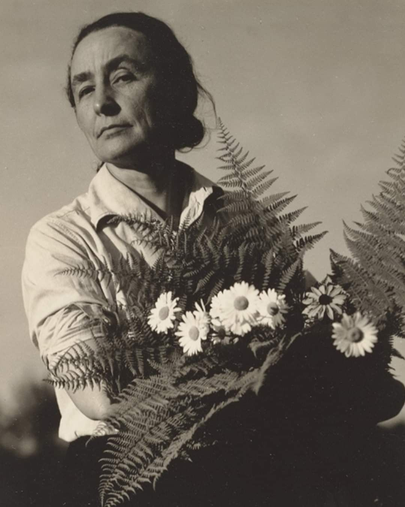
Georgia O'Keeffe
Georgia O'Keeffe (November 15, 1887 – March 6, 1986), was an American modernist painter known for her paintings of flowers and landscapes.
Her distinctive style made her one of the most important figures in American modern art.
Famous Artworks: Jimson Weed/White Flower No. 1 (1932), Black Iris III (1926), and Cow's Skull: Red, White, and Blue (1931)
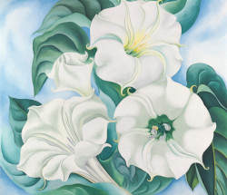
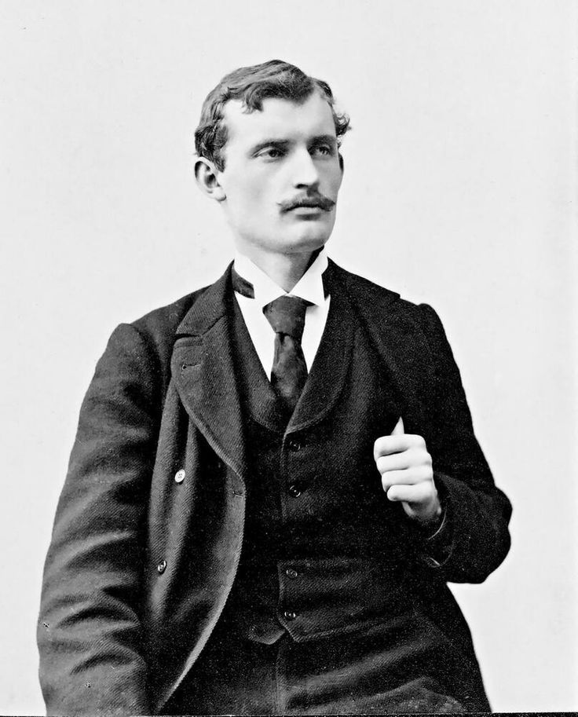
Edvard Munch
Edvard Munch (December 12, 1863 – January 23, 1944), was a Norwegian painter associated with Expressionism.
His emotionally intense works explored themes such as anxiety, love, and human experience.
Famous Artworks: The Scream (1893), Madonna (1894–1895), and The Sick Child (1885–1886)